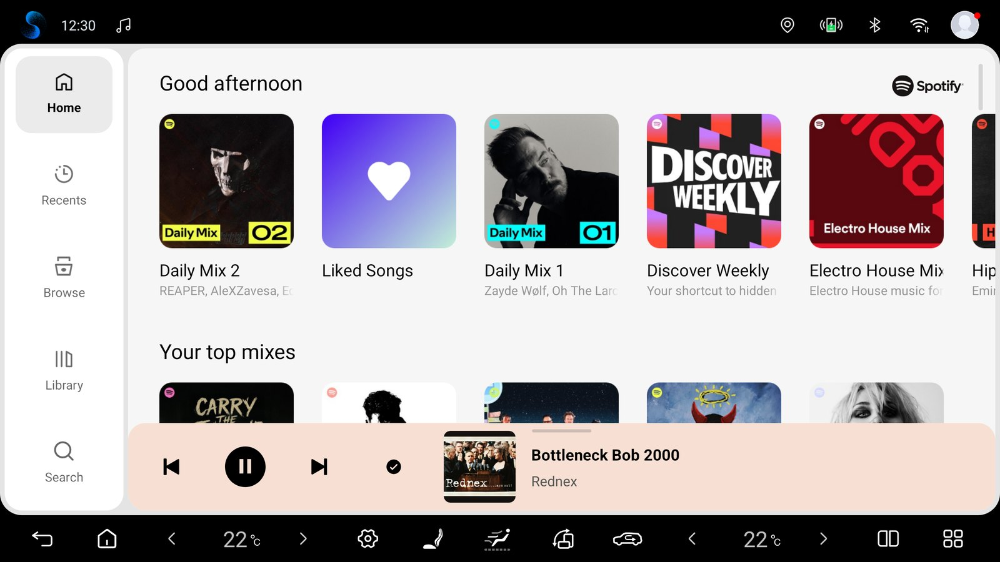
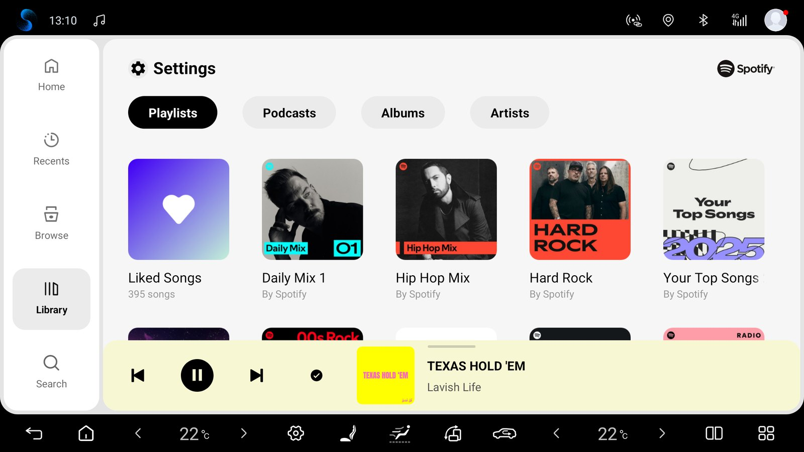

Новий стиль
Редизайн, ближчий до сучасного Spotify: заокруглені картки, шрифт Figtree, денна й нічна теми за авто та колір з обкладинки. Класичний вигляд лишається в Налаштуваннях магнітоли → Вигляд.
Експериментальний плеєр Spotify Automotive для Android-магнітол. Інтерфейс на основі BYD та музичний сервіс об’єднані в одному APK з однією іконкою і штатним входом Spotify.
Завантажити APK test.10 ↗

Редизайн, ближчий до сучасного Spotify: заокруглені картки, шрифт Figtree, денна й нічна теми за авто та колір з обкладинки. Класичний вигляд лишається в Налаштуваннях магнітоли → Вигляд.
Інтерфейс і музичний сервіс працюють усередині одного встановленого пакета.
Натисніть LOG IN, скануйте код телефоном і підтвердьте вхід у Spotify.
На основі плеєра BYD, без обов’язкових дозволів на системи автомобіля BYD.
Відкрийте Налаштування магнітоли → Акаунти, щоб додати акаунт через QR-код, перейменувати збережені акаунти або переключитися між ними.
Закріплений ID пристрою, безпечне видалення старих акаунтів і одне автоматичне відновлення за запуск зберігають вхід у Spotify. Останню подію входу видно в Налаштуваннях магнітоли.
Spotify щодня перевіряє нові тестові збірки й встановлює їх після вашого підтвердження у вікні «Оновити» Android. Перемикачі й кнопки — у Налаштуваннях магнітоли → Оновлення. Збірки, старші за test.9, треба один раз оновити вручну.
У налаштуваннях магнітоли є окремі опції відновлення після запуску чи тривалого сну та відтворення при новому запуску Spotify. Додаток чекає готовності плеєра; пауза скасовує автоматичні повтори.
Spotify запускає та зупиняє штатний ритм підсвітки разом із відтворенням. Увімкніть «Музичний ритм» у налаштуваннях підсвітки авто; кольорами й ефектами керує машина.
Preview and send a technical report, track or cancel pending reports, and export a ZIP. Automatic reporting is optional after the first-use notice.
Open Head unit settings → Support. Send diagnostics lets you preview approved technical data before sending. Reports go to our shared server and a limited summary may appear in this project’s PUBLIC GitHub Issues. Automatically send diagnostics is selected on the first-use notice and starts only after Continue; you can turn it off in Support. Automatic reports cover measured integration failures only, at most one new report per day. Manual sending, pending status/cancellation and ZIP export remain available with automatic sending off. Reports exclude account data, song/playlist names, location and screenshots. Technical metadata is not a guarantee of anonymity.
Headunit-test.10 додає Новий стиль, увімкнений за замовчуванням: заокруглені картки, шрифт Figtree, денну й нічну теми, колір з обкладинки, перекомпонований плеєр із робочою кнопкою «подобається», обкладинку й еквалайзер у черзі, заокруглені кути застосунку та нові Налаштування магнітоли. Класичний стиль зберігає попередній інтерфейс. Закриття Spotify тепер завжди зупиняє музику, а перемикання дня й ночі з відкритою Бібліотекою більше не обвалює плеєр. Оскільки змінилися ресурси інтерфейсу, збірку зроблено повним еталонним збиранням. Release-аудит: 45 PASS / 0 FAIL, пройдено 152 перевірки оновлювача й 39 перевірок входу, сертифікат підпису збігається з test.9. В авто власника (BYD DiLink 5.0 / Android 12) test.10 встановлено оновленням поверх test.9: вхід і музика збереглися, Новий стиль перевірено в денній темі без збоїв. На емуляторі Android 12 з реальним акаунтом вхід зберігся після оновлення з test.9; перевірено день і ніч, 1024×600 і портретну орієнтацію, перемикання Класичний ↔ Новий.
Експериментальна headunit-test.10. Перше оновлення з test.9 до test.10 через сам застосунок на магнітолі ще не спостерігали. Новий стиль не перевіряли арабською (справа наліво) і з розкладкою для правого керма, де плеєр лишається класичним. Також не перевірені реальний сон/перезавантаження авто, акаунти A → B → A, офлайн-завантаження, кнопки на кермі, DiLink 5.1 / Android 13 та інші магнітоли.
Android 9+ (API 28). Ритм BYD перевірено на DiLink 5 / Android 12; DiLink 5.1 / Android 13 та інші прошивки ще не перевірені. Профілі AAOS і GENERIC реалізовано; реальні магнітоли інших виробників та AAOS ще не перевірені.
SHA-256 поточної тестової збірки:
ccf440e37acd3208f2b076d1023bfec9d5370c626230b65f12980b73f6fcf806Наш Java-код інтеграції, патчі, скрипти складання, аудит і тести емуляторів доступні в репозиторії. Закритий SDK Spotify та інтерфейс BYD є локальними вхідними файлами складання.